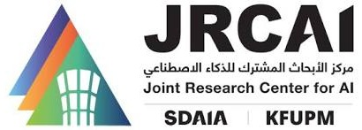

IEEE JBHI · 2026
PULSE
A Unified Multi-Task Architecture for Cardiac Segmentation, Diagnosis, and Few-Shot Cross-Modality Clinical Adaptation
1King Fahd University of Petroleum and Minerals (KFUPM), Saudi Arabia • 2Massachusetts Institute of Technology (MIT), USA •
3Harvard Medical School, Harvard University, USA • 4SDAIA-KFUPM Joint Research Center for Artificial Intelligence
*Corresponding: muzammil.behzad@kfupm.edu.sa
Right ventricle
Myocardium
Left ventricle